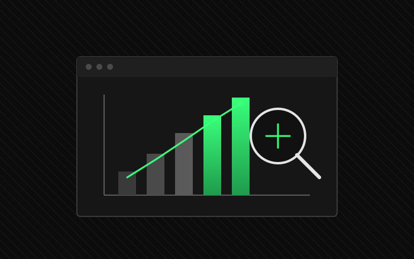
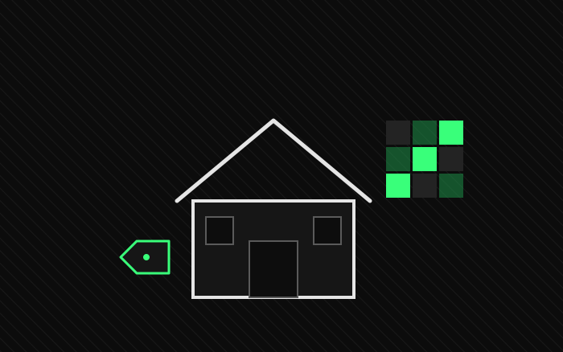
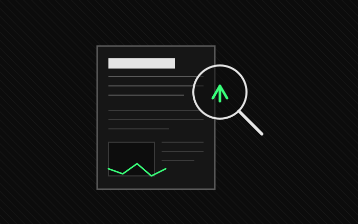

01 / projects[3]
click any item in the list to open the repository on github.

pc-hunter-tool
github/>
structured automation for web scraping and real-time market monitoring.
antibiotics-manual
github/>
digital and algorithmic platform for cataloging and querying medical data.

imob-data
github/>
real estate scraping with playwright and machine learning for price prediction.

new-search
github/>
news scraper and market sentiment analyzer for corporate evaluation.